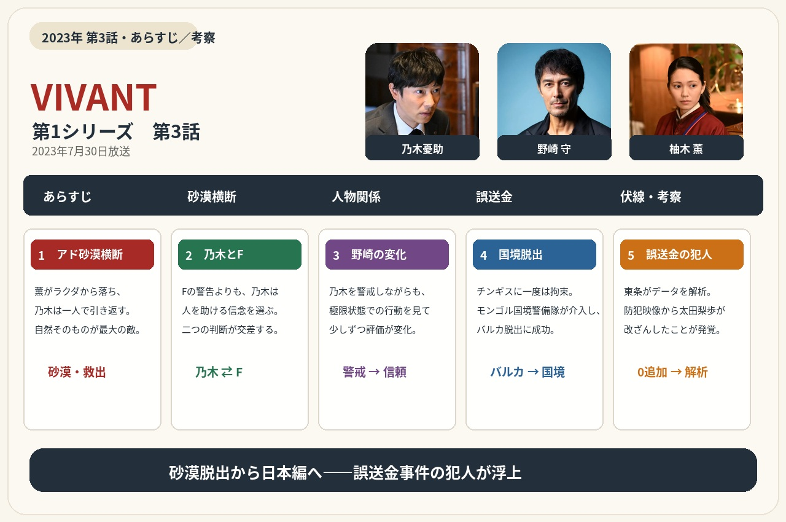
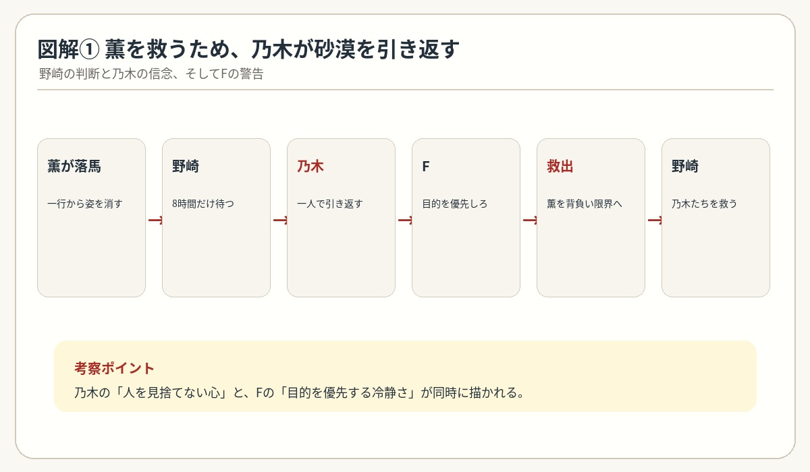
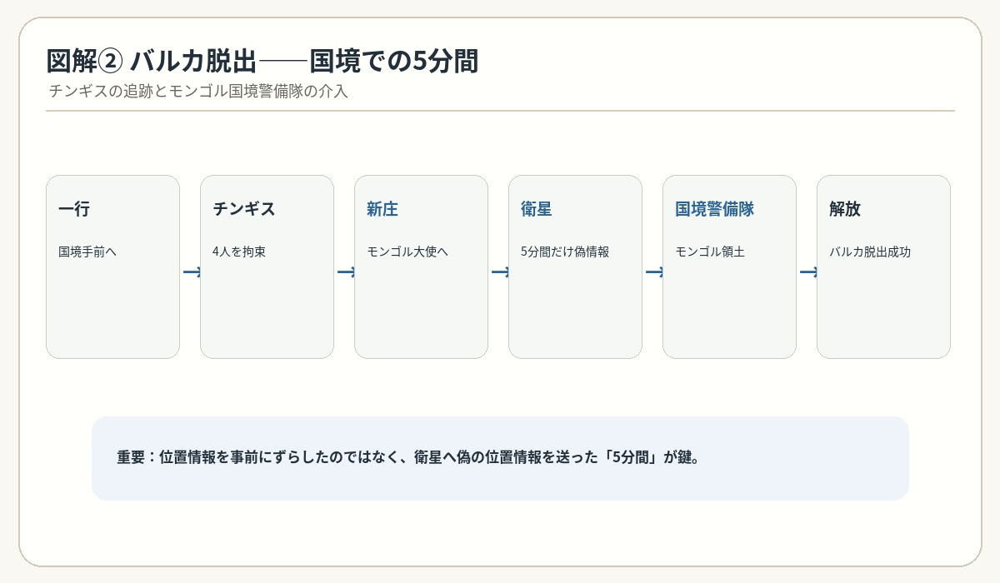
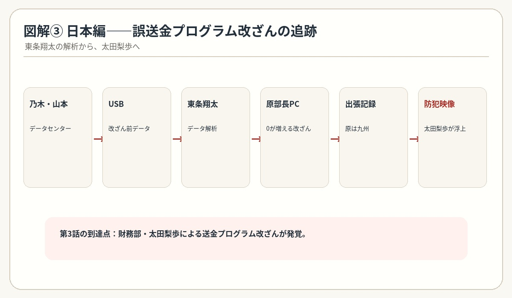

VIVANT 第3話｜アド砂漠からの脱出
誤送金事件の犯人・太田梨歩が浮上
砂漠で薫を救う乃木、乃木を見る野崎の変化、国境でのチンギスとの攻防。そして帰国後、誤送金プログラムを改ざんした人物へ調査が迫ります。見返しながら、第3話のあらすじ・人物関係・伏線・考察を整理します。

1. アド砂漠横断が始まる
第3話は、乃木たちがアド砂漠へ足を踏み入れるところから始まります。空港から帰国する道を失ったため、日本へ戻るには砂漠を越えて隣国へ抜けるしかありません。
案内役はドラム。現地の地理を熟知しているため、地図だけでは分からないルートを選びながら一行を導いていきます。
昼は照りつける太陽、夜は凍える寒さ。水や食料も限られ、少しの判断ミスが命取りになります。第1話、第2話の逃亡劇とは違い、この回では「自然そのもの」が最大の敵として描かれています。
2. 極限状態でも変わらない乃木
砂漠で薫がラクダから落ち、一行から姿を消します。乃木が戻ることに野崎は「諦めろ」と言いますが、乃木は「命の恩人だから」と譲りません。野崎は「8時間だけ待つ」と猶予を与え、11時30分には引き返さなければならない状況になります。
それでも乃木は黙々と歩き続けます。途中、頭の中に現れる「F」は「俺たちにはやることがある」と何度も忠告します。しかし乃木は、人を助けるという自分の信念を曲げません。
この二人のやり取りは、単なる別人格というだけでなく、「冷静な判断」と「人を思いやる心」が対話しているようにも感じられます。
薫を見つけた乃木はラクダに乗せて野崎が待つ場所へ戻ろうとしますが、乃木が乗るラクダが限界を迎え、さらに薫を乗せたラクダも動けなくなります。薫を背負った乃木もついに限界を迎えて倒れます。そこに野崎が現れます。

3. 野崎の見る目が変わり始める
野崎は公安として乃木を警戒し続けています。しかし砂漠での行動を見ているうちに、疲れている仲間を気遣い、自分だけ助かろうとしない乃木の姿に、少しずつ考えが変わっていきます。
それでも、「普通の商社マンにしては落ち着きすぎている」という疑問だけは消えません。乃木が時折見せる判断力や精神力には、一般人とは思えないものがありました。
4. 薫との絆
歩けなくなれば乃木がおぶい、水を分け合う。この砂漠での時間を通じて、二人の距離は一気に縮まり、家族のような温かい関係が生まれていきます。
5. 水不足という最大の試練
旅が長引くにつれ、水が底をつき始めます。誰もが疲労で足取りを重くし、「本当に国境までたどり着けるのか」という不安が広がります。
派手な戦闘シーンはないものの、「一歩進むことすら苦しい」という緊張感が続き、視聴者も登場人物と同じような息苦しさを感じる展開になっています。
6. 国境を越え、新たな一歩へ
長い砂漠横断の末、一行はようやく隣国との国境手前に到着します。しかし、ここにバルカ警察のチンギスが現れ、追跡から逃れることはできません。一度は4人ともチンギスに捕まります。
終わりかと思われたその時、モンゴル国境警備隊が戦車で現れます。「ここはモンゴル領土だ」とチンギスに警告し、領土侵略として総攻撃を受ける可能性を突きつけたことで、4人は解放されます。
実際には位置情報を事前にずらしていたわけではなく、新庄がモンゴル大使に掛け合い、あの5分間だけ衛星に偽の位置情報を送るよう協力を取り付けていたのでした。
第1話から続いていた「バルカ共和国からの脱出」は、ここで一区切りとなります。しかし、140億円の誤送金事件、テントの正体、「VIVANT」の意味といった核心部分は、まだ何も解決していません。

7. 日本では別の動きが始まる
日本では丸菱商事でも調査が進み始めます。本当に乃木の送金ミスだったのか、それとも誰かが意図的に仕組んだ事件だったのか。少しずつ社内の不自然な点が浮かび上がり、事件の舞台が日本へ移っていくことを予感させます。
8. 日本編への序章
第3話では、一行が日本へ戻り、物語は海外での逃亡劇から日本を舞台にした本格的な謎解きへと進みます。
野崎は乃木を以前ほど疑わなくなったものの、「まだ何か隠している」という感覚は消えていません。乃木も、自分の過去や本当の姿を語ることはありません。
9. 日本編――誤送金事件の犯人が浮上
帰国した乃木は長野専務から個別に呼び出され、バルカでの出来事について詳しく聞かれます。長野はザイールの名前に反応し、アマン建設についても執拗に質問してきます。
薫は日本の病院で再就職し、ジャミーンもそこで受け入れて手術することになります。
一方、誤送金事件の調査では、サイバー犯罪対策課のホワイトハッカー・東条翔太が登場します。東条は、送金システムを書き換えられるほどの高度なハッカーが関わっている可能性を考えます。
乃木は同期の山本巧に相談し、データセンターの特別ルームへ入る計画を進めます。特別ルームも監視されているため、乃木と山本が協力して潜入し、渡されたUSBをサーバーへ挿して改ざん前のコピーデータを取得することに成功します。
そのデータを東条が解析した結果、送金額の「0」が増えるよう、原部長のパソコンからプログラムが改ざんされていたことが判明します。しかし原は、その時刻には九州へ出張中でした。
そこで異常が認められた時刻の防犯カメラ映像を確認すると、財務部の太田梨歩が送金プログラムを改ざんしていたことが発覚します。第3話で、誤送金事件の実行犯として太田梨歩が浮かび上がりました。

第3話で新たに分かったこと
| 謎・項目 | 第3話終了時点 |
|---|---|
| バルカ共和国 | 脱出に成功し、モンゴル側へ到達 |
| 野崎 | 乃木への信頼が少し芽生える |
| F | 乃木に目的を優先するよう促す冷静な存在 |
| 薫 | 砂漠で乃木に救われ、二人の距離が縮まる |
| 誤送金事件 | 太田梨歩によるプログラム改ざんが発覚 |
| 物語 | 海外逃亡編から日本での真相追及へ移行 |
第3話の見どころ・伏線・考察
第3話は、アクションよりも「極限状態で人間性が試される回」という印象が強く残ります。砂漠という過酷な環境の中で、乃木の優しさ、野崎の観察力、ドラムの頼もしさが丁寧に描かれています。
特に気になるのは、乃木とFの関係です。Fは「俺たちにはやることがある」と目的を優先させようとしますが、乃木は薫を見捨てません。この対話は、後に明らかになる乃木の本当の姿を考えるうえでも重要な伏線に見えます。
また、第1話から続いたバルカでの逃亡劇が一区切りとなり、帰国後は誤送金事件の調査が急速に進みます。太田梨歩が改ざんしていたことは判明しましたが、「なぜ太田が実行したのか」「その背後に誰がいるのか」はまだ残された謎です。